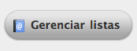
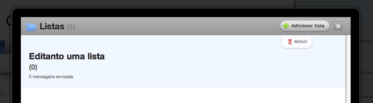
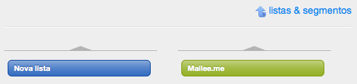
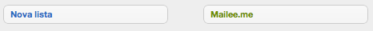

1 Criando, editando e excluindo uma lista
Para iniciar o gerenciamento de listas, selecione Contatos na barra de navegação e clique no botão gerenciar listar no final da coluna lateral.

1.1 Criando uma lista de contatos
Ao iniciar o gerenciamento de em uma nova conta, o modal de gerenciamento estará vazio. Para criar uma lista clique no botão adicionar uma lista
Na tela de criação de lista você tem os seguintes campos:
- Nome – Nome da sua futura lista, campo obrigatório
- Empresa – Nome da empresa, ou do produto
- Site – Endereço na web
- Endereço – Endereço físico
- Fone – Número de contato
- Descrição – Texto livre.
Você sabe porquê há tantos campos não obrigatórios na criação de uma lista? É porque você pode usá-los como campos dinâmicos em suas mensagens. Veja mais detalhes no nosso manual.
1.2 Editando uma lista de contatos
Dentro do gerenciador de lista, posicione o mouse sobre a lista desejada. Perceba que a lista é destacada ao passar o mouse, adquirindo um fundo azul claro e deixando visível o botão “excluir”. Agora é só clicar sobre a lista destacada e você será direcionado a tela de edição. A edição possuí os mesmos campos que a criação de lista.

1.3 Exclusão de lista de contatos
Dentro do gerenciador de lista, posicione o mouse sobre a lista desejada. Perceba que a lista é destacada ao passar o mouse, adquirindo um fundo azul claro e deixando visível o botão “excluir”. Clique no botão “excluir”. Aguarde a mensagem do sistema confirmando a exclusão.
Excluir uma lista de contatos não irá excluir os contatos inseridos na lista.
2 Visualizando os contatos inseridos em listas.
Para visualizar os contatos inseridos dentro de listas e seguimentos, clique no botão “listas & segmentos” e clique na lista e ou seguimento desejado. Observe que a cor da lista e do seguimento ficarão sólidas ao serem clicadas, demonstrando que estão ativas.

Com a lista selecionada, é possível voltar a tela de contatos e realizar diversas ações. Para que a lista de contatos mostre novamente todos os contatos, é necessário clicar novamente em “listas & segmentos” e desmarcar as opções.
